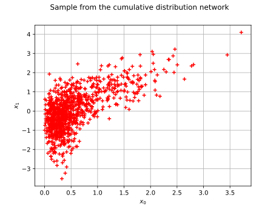
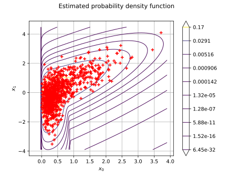
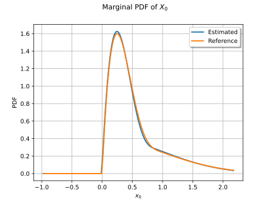
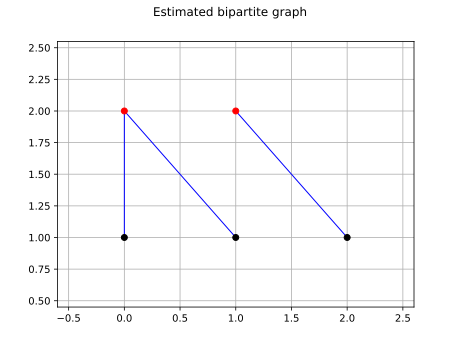

Note
Go to the end to download the full example code.
Estimate a cumulative distribution network¶
In this example we estimate the factors of a
CumulativeDistributionNetwork from a sample, the graph
of the network being known.
Each factor is described by a template distribution: the estimated factor
has the same type as its template and receives the corresponding parameters.
The factory maximizes the exact log-likelihood of the network, i.e. the
log-likelihood of the mixed derivative of the product of the factor CDFs.
Warning
The factory is experimental and likely to be modified in future
releases. To use it, import the openturns.experimental submodule.
We use the same two-dimensional network as in the cumulative distribution network example: a Beta factor on the first variable and a bivariate correlated Normal factor on both variables.
import openturns as ot
import openturns.experimental as otexp
import openturns.viewer as otv
We build the reference network and draw a sample of size 1000.
ot.RandomGenerator.SetSeed(12345)
correlation = ot.CorrelationMatrix(2)
correlation[1, 0] = 0.8
beta = ot.Beta(2.0, 5.0, 0.0, 1.0)
normal = ot.Normal([0.0, 0.0], [1.0, 1.0], correlation)
graph = ot.BipartiteGraph([[0], [0, 1]])
reference = ot.CumulativeDistributionNetwork([beta, normal], graph)
sample = reference.getSample(1000)
As in the other distribution examples, the sample is represented by a red cloud.
graph_sample = ot.Graph(
"Sample from the cumulative distribution network",
"$x_0$",
"$x_1$",
True,
"",
)
cloud = ot.Cloud(sample)
cloud.setColor("red")
graph_sample.add(cloud)
view = otv.View(graph_sample)

We create the factory from the known graph and from one template per factor. The templates define the parametric families; their parameters are used as the starting point of the maximum likelihood optimization.
CumulativeDistributionNetworkFactory
The optimization is performed by the solver returned by
getOptimizationAlgorithm().
We limit the number of function evaluations and relax the convergence
tolerances to keep this example fast.
solver = factory.getOptimizationAlgorithm()
solver.setMaximumCallsNumber(100)
solver.setMaximumAbsoluteError(1.0e-4)
solver.setMaximumRelativeError(1.0e-4)
solver.setMaximumResidualError(1.0e-4)
solver.setMaximumConstraintError(1.0e-4)
factory.setOptimizationAlgorithm(solver)
estimated = factory.build(sample)
We compare the estimated parameters with the parameters of the reference network, and the BIC of both distributions on the sample.
print("Estimated parameter:", estimated.getParameter())
print("Reference parameter:", reference.getParameter())
bic_estimated = ot.FittingTest.BIC(
sample, estimated, estimated.getParameterDimension()
)
bic_reference = ot.FittingTest.BIC(
sample, reference, reference.getParameterDimension()
)
print("BIC of the estimate:", bic_estimated)
print("BIC of the reference:", bic_reference)
Estimated parameter: [2.00444,4.39697,-0.00585794,0.880073,0.0376525,0.964252,0.0119575,1.04764,0.812164]
Reference parameter: [2,5,0,1,0,1,0,1,0.8]
BIC of the estimate: 3.0265724028164875
BIC of the reference: 3.040988073772346
Because the two factors share the first variable, the split of the density between them is weakly identified: several parameter vectors produce nearly the same joint distribution. The estimated joint density is nevertheless close to the reference one, as the BIC values show.
We draw the estimated PDF, with the sample on top of it. The PDF is evaluated on a mesh covering at least the bounding box of the sample, so that the whole cloud is visible.
lower = sample.getMin()
upper = sample.getMax()
margin = [(upper[i] - lower[i]) * 0.05 for i in range(2)]
lower = [lower[i] - margin[i] for i in range(2)]
upper = [upper[i] + margin[i] for i in range(2)]
graph_pdf = estimated.drawPDF(lower, upper, [151, 151])
graph_pdf.setTitle("Estimated probability density function")
graph_pdf.setXTitle("$x_0$")
graph_pdf.setYTitle("$x_1$")
cloud = ot.Cloud(sample)
cloud.setColor("red")
graph_pdf.add(cloud)
view = otv.View(graph_pdf)

The marginal distribution of the first variable is also estimated. We compare it with the marginal of the reference network.
graph_marginal = estimated.getMarginal(0).drawPDF()
graph_marginal.add(reference.getMarginal(0).drawPDF())
graph_marginal.setLegends(["Estimated", "Reference"])
graph_marginal.setTitle("Marginal PDF of $X_0$")
graph_marginal.setXTitle("$x_0$")
graph_marginal.setYTitle("PDF")
view = otv.View(graph_marginal)

When the graph is unknown, the factory estimates it together with the factor distributions. The structure-learning mode only considers block-independent networks: the cliques of the factors form a partition of the variables. We illustrate it on a three-dimensional network whose first two variables are correlated and whose third variable is independent.
structure_reference = ot.CumulativeDistributionNetwork(
[ot.Normal([0.0, 0.0], [1.0, 1.0], correlation), ot.Normal(2.0, 0.5)],
ot.BipartiteGraph([[0, 1], [2]]),
)
structure_sample = structure_reference.getSample(1000)
structure_factory = otexp.CumulativeDistributionNetworkFactory(1, 3, 2)
# Candidate block fits emit warnings that are expected during the search.
ot.Log.Show(ot.Log.NONE)
try:
structure_estimated = structure_factory.build(structure_sample)
finally:
ot.Log.Show(ot.Log.DEFAULT)
structure_graph = structure_estimated.getImplementation().getGraph()
print("Estimated graph:", structure_graph)
Estimated graph: [[0,1],[2]]
In this example, the bipartite graph has been exactly recovered.
The estimated graph is drawn with the same convention as in the construction example.
structure_graph_view = structure_graph.draw()
structure_graph_view.setTitle("Estimated bipartite graph")
view = otv.View(structure_graph_view)
